Regression comparison
Download resultsDataset
Training setting
Repulsion weight
Repulsion location
Compare repulsion locations
Method
Random points redraw every step and exclude all training inputs. Training and random use B points; combined uses 2B. Prediction axes match within each DE or BDKN row.
Functional repulsion
BetterWorse · relative rank within each column
DE
| Repulsion inputs | RMSE | NLL | Training seconds |
|---|---|---|---|
| Training | 1.23267 | 558.26773 | 12.17 |
| Random | 1.39133 | 164.16358 | 12.82 |
| Training + random | 1.41770 | 206.77964 | 12.86 |
BDKN
| Repulsion inputs | RMSE | NLL | Training seconds |
|---|---|---|---|
| Training | 1.23420 | 65.67188 | 12.30 |
| Random | 1.39262 | 24.22756 | 12.98 |
| Training + random | 1.41405 | 26.42024 | 13.01 |
Stage 1 · total loss and data fit
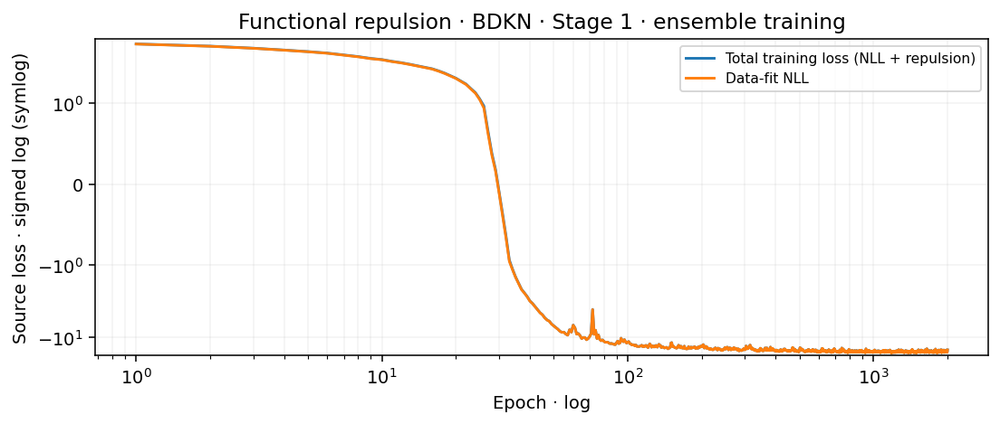
X: log · Y: signed log
X: log · Y: signed log
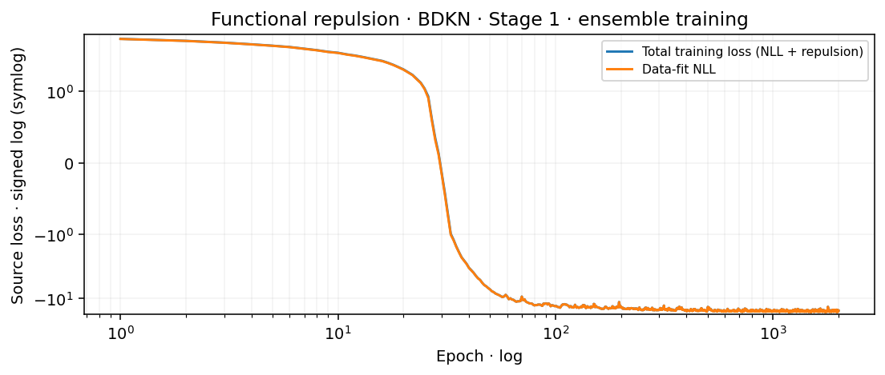
X: log · Y: signed log
Repulsion loss R only
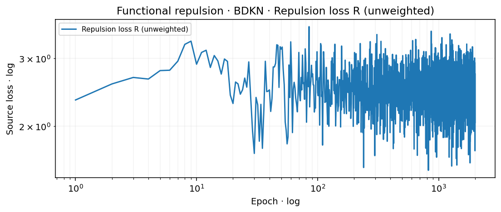
X: log · Y: log
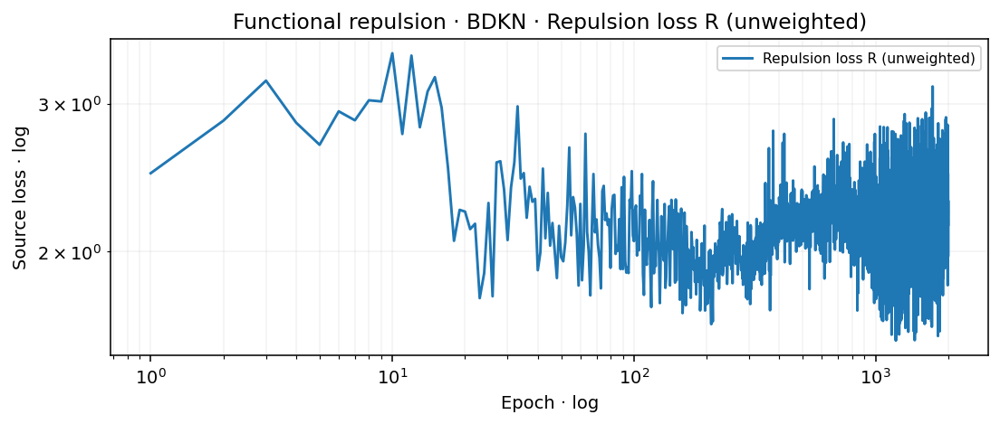
X: log · Y: log
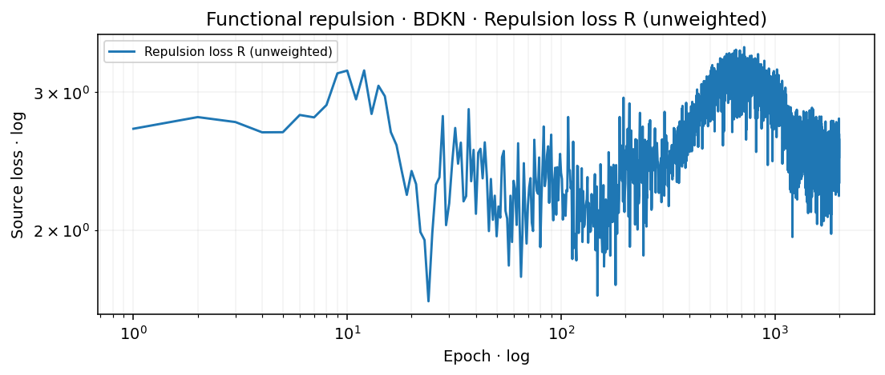
X: log · Y: log
Stage 2 · Bayesian marginal NLL
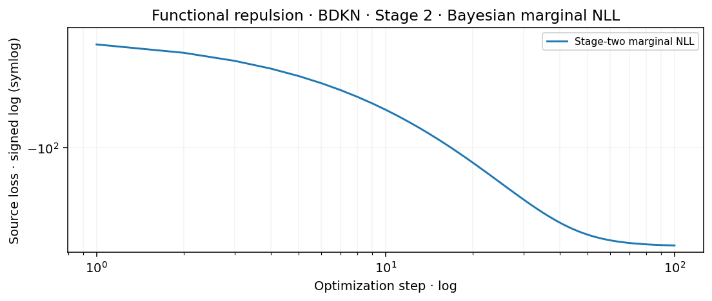
X: log · Y: signed log
X: log · Y: signed log
X: log · Y: signed log
First-order repulsion
BetterWorse · relative rank within each column
DE
| Repulsion inputs | RMSE | NLL | Training seconds |
|---|---|---|---|
| Training | 1.23393 | 650.92129 | 24.93 |
| Random | 1.44391 | 191.38859 | 26.02 |
| Training + random | 1.37332 | 188.94802 | 26.08 |
BDKN
| Repulsion inputs | RMSE | NLL | Training seconds |
|---|---|---|---|
| Training | 1.23084 | 66.94470 | 25.07 |
| Random | 1.53307 | 21.36257 | 26.16 |
| Training + random | 1.31866 | 21.14065 | 26.22 |
Stage 1 · total loss and data fit
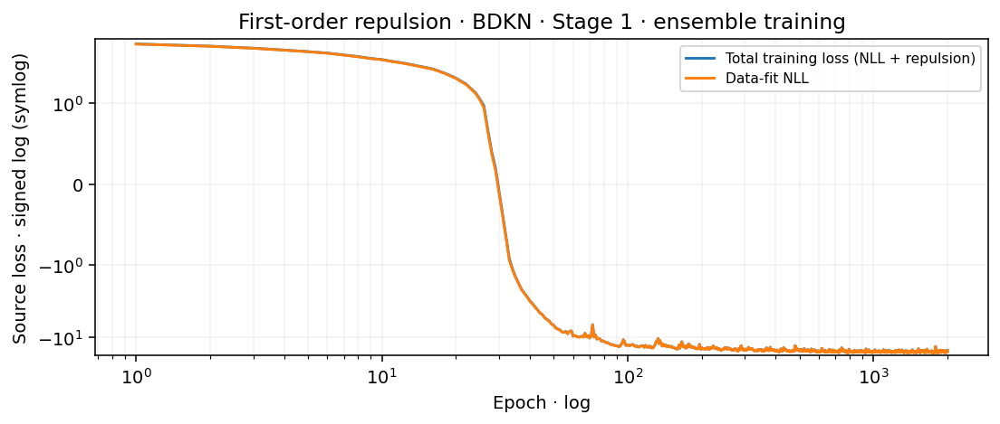
X: log · Y: signed log
X: log · Y: signed log
X: log · Y: signed log
Repulsion loss R only
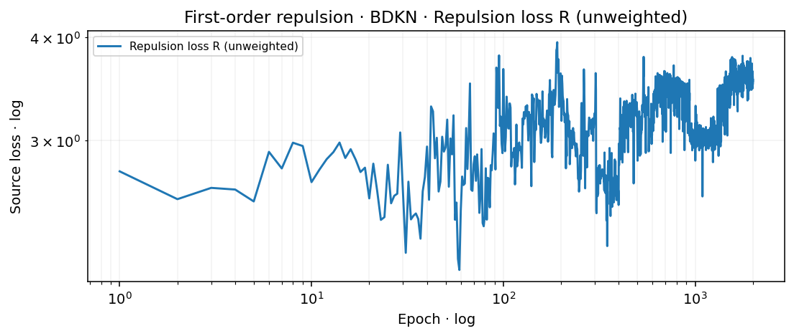
X: log · Y: log
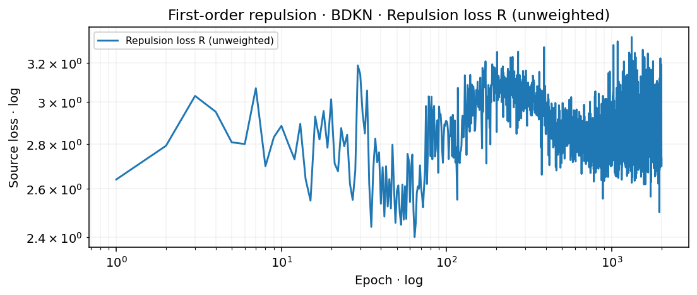
X: log · Y: log
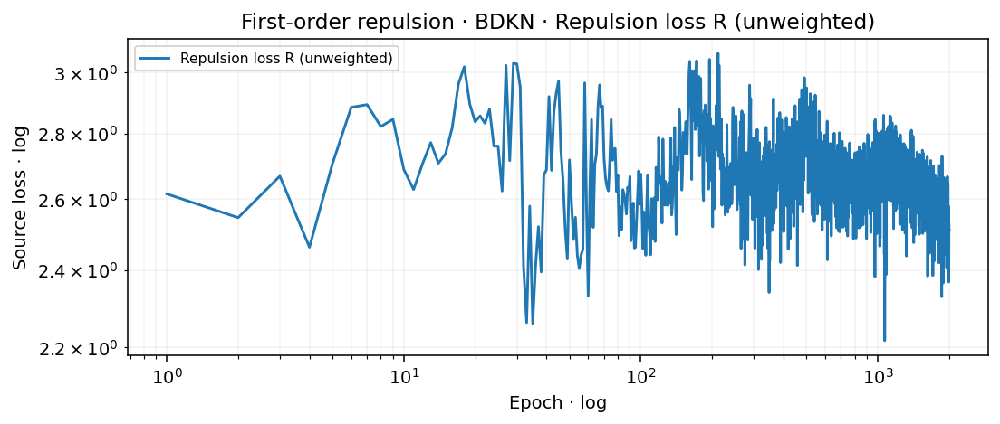
X: log · Y: log
Stage 2 · Bayesian marginal NLL
Weight repulsion · location-independent
The loss compares network parameters directly. These same results apply to every location.
| Stage | RMSE | NLL | Training seconds |
|---|---|---|---|
| DE | 2.55432 | 197.55276 | 9.46 |
| BDKN | 2.66177 | 19.82798 | 9.58 |

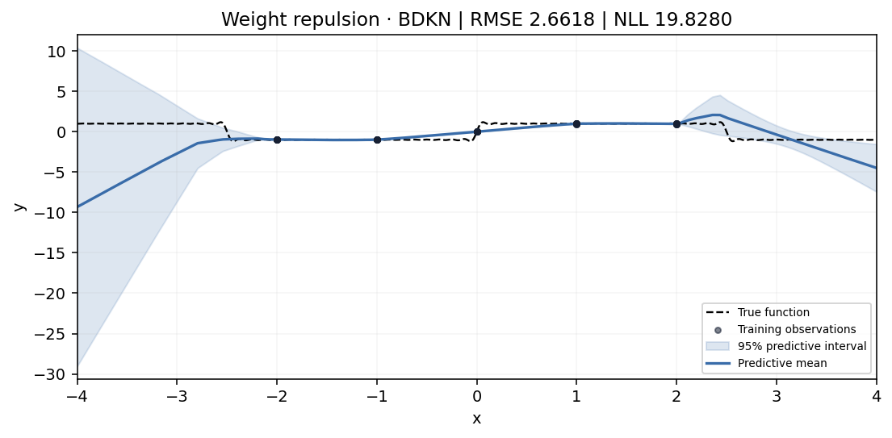